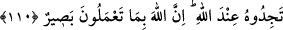

Allah’ın emri gelinceye kadar onları bırakın, affedin serzeniş de etmeyin.” Bu cümlenin
şu şekilde anlaşılması da câizdir. “Onlar, kendi arzu ve heveslerine uyarak sizin dinden
çıkmanızı isterler. Yoksa bunu dindarlık adına veya kendilerince hak olduğu için
yapmazlar.”
“Afv” lügatte günahkârı cezâlandırmayı terketmek; yâni ona mükâfât veya mücâzât
cinsinden bir şey uygulamamakdır. Sanki günahkârı terkeden günahını siler. Mükâfât ve
cezâsını terkeder. Bu kelime suçluya karşı dil ile yapılacak kınamayı ve serzenişi içine
almaz. Çünkü insan bazen affeder ama, dil ile kınamaktan geri kalmaz. Bu nedenle
âyette “serzeniş de etmeyin” buyrularak bu durum ayrıca belirtilmiştir. Âyetteki bu
ifâdelerden maksad, onların yaptıklarına rızâ gösterin, demek değildir; çünkü bu
küfürdür, Allah ise küfürle emretmez. Aksine bunlardan maksad, onlarla savaşmanın ve
onların çirkin sözlerine bilmukabele cevap verilmesinin terkidir. Âyette geçen
“Allah’ın emri gelinceye kadar” ifâdesinin anlamı; Allah hükmünü verinceye kadar,
demektir. Bu hüküm ise, onlarla savaşmaya, üzerlerine cizye konulmasına veya Benî
Kurayza ile Benî Nadîr’in ileri gelenlerinin öldürülmesine izin verilmesidir. Rivâyete
göre ashâb-ı kirâm kendileri kâfir olan ve müslümanları da küfre dâ’vet eden bu
yahûdîlerle savaşmak için Hz. Peygamber (s.a.)’den izin istediler. Bunun üzerine,
Allah’ın emri gelinceye kadar onlarla savaşmayı ve karşılık vermeyi yasaklayan bu âyet
nâzil oldu: “Şüphesiz ki Allah, her şeye hakkıyla kâdirdir.” Vakti, saati geldiğinde
onlardan intikam almaya da elbette kâdirdir.”
110. Namazı kılın, zekâtı verin, önceden kendiniz için yaptığınız her iyiliği
Allah’ın katında bulacaksınız. Şüphesiz Allah, yapmakta olduklarınızı noksansız
görür.
Bir önceki âyette Allah, mü’minlere yahûdîler karşısında takınmaları gereken tavrı
açıkladıktan sonra: “Namazı dosdoğru kılın ve zekâtı verin.” buyurarak bir anlamda
mü’minlere, kâfirlere karşı sabırlı olmalarını ve onlara aldırış etmemekle birlikte iyilik
ve ibâdetle Allah’a sığınmalarını emretmektedir. Maksad, farz, vâcib ve nâfilelerle
Allah’a tâata devâmı emirdir. Bu mânâyı: “Kendiniz için önden ne hayır yollarsanız,
Allah katında onu bulacaksınız.” ifâdesinden anlamaktayız. Âyette zikredilen “hayr”
tüm iyi amelleri kapsamasına rağmen, Allah Teâlâ kendi katındaki önemine binâen
namaz ve zekâtı ayrıca zikretmiştir. Çünkü namaz bedenî bir ibâdet olup, Allah’ın
insanoğluna bahşettiği uzuvların bir şükrüdür. Zekât da mâlî bir ibâdet olup, Allah’ın
zengin kullarına çeşitli alanlarda çalışmaları sebebiyle bahşettiği; onların rahat ve geniş
yaşamalarına imkân sağlayan malın şükrüdür. “Allah katında onu bulursunuz”; yâni
dünyâda yapmış olduğunuz amellerin, mükâfât veya cezâ olarak karşılıklarını âhırette